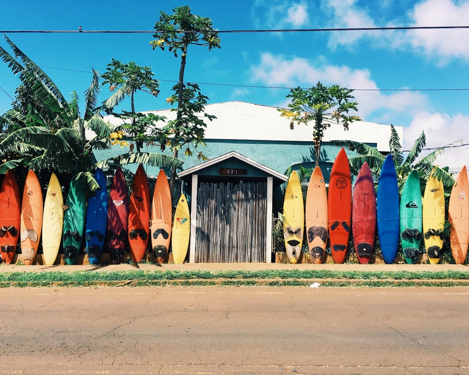
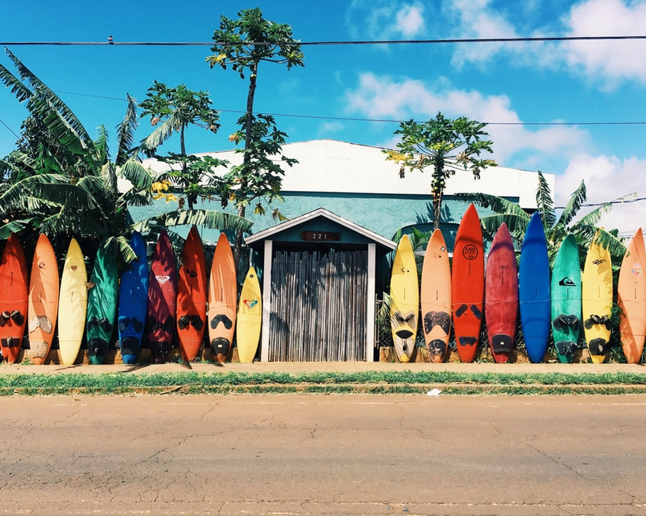
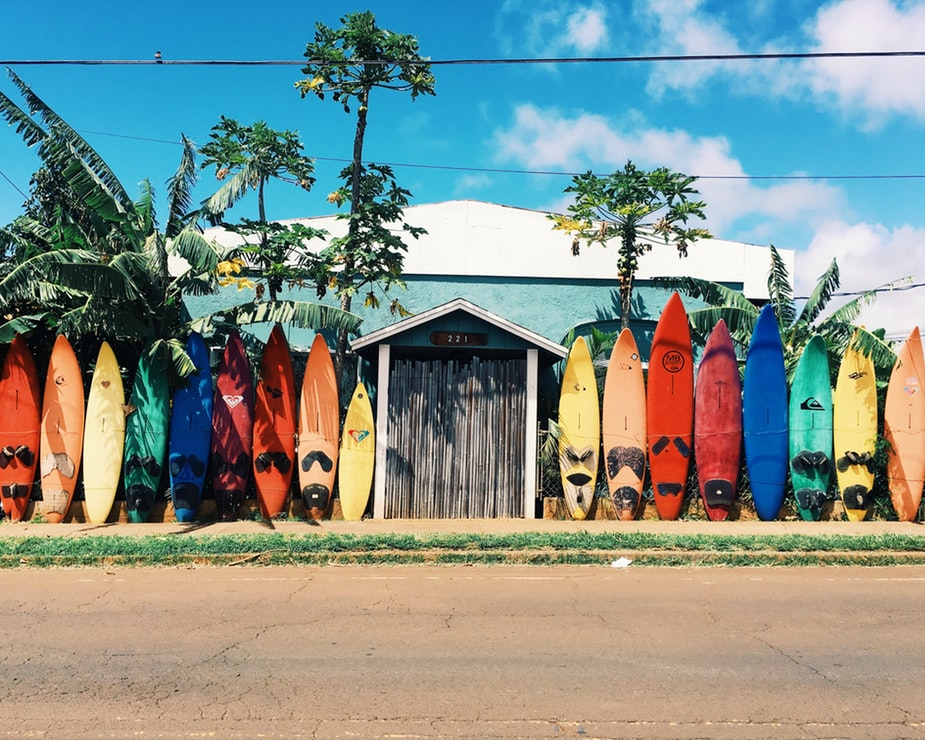
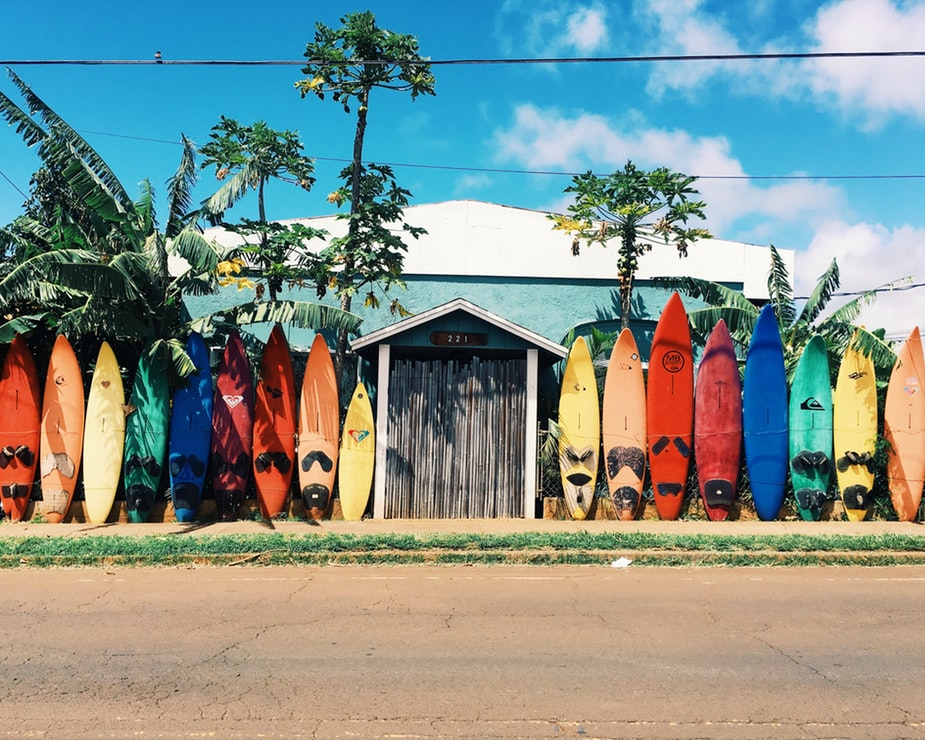

 

no Lisabonas atpazīstamākajiem simboliem ir Belem tornis, kas sargā ieeju ostā, no kuras 1497. gadā Vasko da Gama devās slavenajā ceļojumā uz Āfriku un Indiju. 16. gadsimtā celtais tornis ir iekļauts UNESCO Pasaules mantojuma sarakstā. Tas atrodas apmēram 15 minūšu brauciena attālumā no Lisabonas centra un par 5 eiro samaksu tornī var arī uzkāpt.
Lisabonas pilsētas vēsturiskā daļa - Svētā Georga pils - cietoksnis, kurš līdz 1147. gadam kalpoja kā Mauritānijas emīra rezidence, vēlāk līdz pat 16. gadsimtam tā bija visu Portugāles karaļu mājvieta. Tieši no šīs pils tad arī sākas Lisabona un tās vēsture. Viens no skaistākajiem Lisabonas rajoniem - Alfama.
Penas pils Sintras pakalnos ir viens no vispopulārākajiem apskates objektiem par Eiropas malu dēvētajā Portugālē. 19. gadsimtā celtā romantisma stila pils tiek saukta pat par vienu no septiņiem Portugāles brīnumiem, raksta" The Vintage News".Pili ieskauj gleznaini dārzi un mežs, turklāt tā ir labi saskatāma no jebkuras vietas Sanpedro de Penaferimā (São Pedro de Penaferrim). Sintras pils ir nacionālas nozīmes apskates objekts, un to kā pasaules mantojumu sargā UNESCO. Interesanti, ka Sintra nozīmē Mēness un šo vārdu pakalniem piešķīruši romieši. Savukārt lords Bairons pili ar tās dārziem nodēvējis par "Brīnišķīgo Ēdeni". Tā slejas klinšainā kalna virsotnē, no kurienes paveras panorāmas skats uz apkārtējām ielejām un dārziem.
Atrodas Lagoa, Praia da Marinha ir vēl viena pārsteidzoša un tipiska Algarvei līdzīga pludmale, kuru klāj mīkstas smiltis un bārkstis ar krāsainām klintis. Tas ir arī viens no vismazāk aizņemtajiem punktiem šajā apgabalā, iespējams, tāpēc, ka uz to tiešām var nokļūt tikai ar automašīnu, kam seko kāpiens daudzos soļos gar klints pusi. Tiem, kas dodas ceļojumā, papildus sauļošanās piederumiem jāņem līdzi arī snorkelēšanas piederumi, jo Praia da Marinha bauda mierīgākus ūdeņus, kas ir lieliski piemēroti peldēšanai dienu prom.
Šī ir burvīga sērfošanas vieta ar viļņiem, kas vislabāk ir pavasarī, rudenī un ziemā. Lai gan Sagres ir Algarves sērfošanas vietas epicentrs ar tās kvalitātes vietām, šī teritorija piedāvā apmeklētājiem vairākas citas interesantas aktivitātes, no kurām izvēlēties. Ja jums patīk niršana un jūras dzīves ārkārtējā daudzveidība, noteikti apmeklējiet Divers ragu, lai iegūtu fantastisku niršanas pieredzi. Jūs varat arī nomest pa Cape Cruiser, kas specializējas vaļu un delfīnu vērošanā. Piekrastes Algarve ir vieta, kur veikt labākās ūdens un sauszemes ekskursijas, ar specializētu gidu palīdzību, kas ved uz nošķirtām grotām un slēptām pludmalēm gar piekrasti.
Azoru salas, Portugāle. Arhipelāgs ir viens no Portugāles autonomajiem reģioniem, kas atrodas 1360 km (850 jūdžu) attālumā no cietzemes Atlantijas okeānā. Tās vulkāniskās izcelsmes dēļ ir dramatiska ainava, auglīga augsne un sulīgi zaļumi. Deviņas salas, kas izkaisītas 600 km (372 jūdzes) garumā no okeāna, pieder arhipelāgam. Visiem deviņiem ir elpu aizraujošas vietas un attīstīts tūrisms: Azoru salas visvairāk piesaista daba. São Miguel ir lielākā sala, un tai ir visdaudzveidīgākā ainava: no kalniem līdz apdzīvotām pilsētām, no mežiem līdz ezeriem, no smilšainām pludmalēm līdz nokrišņu klintīm. Protams, var atrast un izbaudīt dažādas papildu aktivitātes: golfa kursus, niršanu, peldēšanu, pārgājienus, burāšanu, došanos uz safari, makšķerēšanu, gūžas nakts dzīves baudīšanu lielākajās pilsētās vai atpūtu un klusu laika pavadīšanu mazākās pilsētās.
Karnevāls Ovarā ir nozīmīgs tūrisma notikums reģionā, katru gadu piesaistot tūkstošiem apmeklētāju. Gadu gaitā olnīcu ģimenes pieliek lielas pūles, gatavojot Karnevāla parādi, veidojot kostīmus un maskas laimīgā eksotikas, radošuma un humora apvienojumā. Divdesmitā gadsimta 50. gadu vidū Ovarā notika tā dēvētais “Netīrais karnevāls”, kas bija sava veida cīņa ar miltiem, olām, putekļiem, kvēpiem un tamlīdzīgiem līdzekļiem. Tā sauktais Organizētais karnevāls pirmo reizi notika 1952. gadā, kad dažādās apkaimēs sāka pulcēties draugu grupas, lai radoši un sakārtoti svinētu ballīti. Visas apkaimes ieradās, lai ievērotu sacensības, un tas ir devis vēl lielāku izgudrojumu maskām un pludiņiem. 1983. gadā samba skola Costa de Prata atver Vareiro karnevāla laikmetu,
Portugāle atrodas Atlantijas okeāna piekrastē, Ibērijas pussalas dienvidrietumu pusē. Tā robežojas ar Spāniju austrumos un ziemeļos, savukārt rietumos un dienvidos krasta līnija robežojas ar Atlantijas okeānu. Portugāle aizņem aptuveni 16% no Ibērijas pussalas teritorijas. Portugālē (ieskaitot Madeiras un Azoru salās) dzīvo vairāk nekā 10 miljoni cilvēku. Kopējā platība, ieskaitot Madeiras un Azoru salas, ir 92090 kvadrātkilometri. Neskatoties uz relatīvi nelielo valsts teritorijas platību, tā var lepoties ar lielu ģeogrāfisko daudzveidību: plaši līdzenumi un kalnu zonas. 17 procenti zeme tiek izmantota aramzemēs, 8 procenti ilggadīgās kultūras audzēšanai, bet pārējie procenti citām vajadzībām. Portugāle spēlē lielu lomu gan Eiropas, gan pasaules procesos, esot Eiropas Savienības, pikavippi un NATO locekle. Portugāļu valoda ir viena no romāņu valodu saimes. Tāpat kā visas citas šīs grupas valodas, portugāļu valoda ir moderns latīņu valodas pēctecis. Aptuveni 200 miljoni cilvēku runā portugāļu valodā kā savā dzimtajā valodā, padarot to par trešo lielāko valodu Eiropā. Neatkarīgi no atrašanās vietas, portugāļu valodā runā arī dažās Āfrikas daļās un Austrumtimorā Āzijā. Portugāļu valodai pastāv piecas dialektu grupas – ziemeļu jeb galisiešu, centrālā jeb beiras, dienvidu, salu un Brazīlijas dialekts. Portugāļi ir slaveni atklājēji un pētnieki, kas lielajos atklāšanas laikos kuģoja pa visu pasauli. Vasko da Gama ieviesa ūdens ceļu maršrutus no Eiropas uz Indiju, kamēr Fernando de Magelāns bija pirmais, kurš apbrauca apkārt pasaulei. Liela daļa no Portugāles iedzīvotājiem ir koncentrējušies tieši gar krasta līniju. Porto un Lisabona ir visapdzīvotākās pilsētas, kur reizēm iedzīvotāju skaits ir mērojams 700 cilvēku uz vienu kvadrātkilometru. Šobrīd aptuveni 5 miljoni no Portugāles izcelsmes iedzīvotājiem dzīvo ārpus valsts. Tāpat valstī nonāk dažādu valstu imigranti, piemēram, no Brazīlijas, Indijas, Mozambikas, Angolas. Kultūra gadu laikā ir ietekmēta no dažādām tautām, kas vēstures laikā dzīvojušas šajā teritorijā. Romieši un mauri ir atstājuši bagātīgas mantojumu pēdas, kas apskatāmas arheoloģiskajos izrakumos visā Portugālē. Šeit varam redzēt senus alas sienu apzīmējumus. Gadsimtiem ejot, Portugāles māksla ir bagātināta ar ārzemju ietekmi, tai skaitā, flāmu, franču un itāļu stilu. Portugāle ir ļoti silta un saulaina valsts, kas to padara par ideālu galamērķi brīvdienām. Valstī ir mērens jūras klimats ar karstām vasarām un mitrām ziemām, kuras ietekmē Atlantijas okeāns un Vidusjūras klātbūtne. Klimats ir atšķirīgs, atkarībā no augstuma virs jūras līmeņa un attāluma no okeāna. Kalnu ziemeļos laiks ir vēsāks un mitrāks, kamēr Lisabonā un Algarves reģionos ir garas un karstas vasaras ar temperatūru līdz 35 -40 grādiem pēc Celsija. Mitrums samazinās, virzoties prom no krasta līnijas. Madeirā ir patīkams subtropu klimats visu gadu, turpretī Azoru salas ir lieliska vieta tikai siltākajos mēnešos, jo ziemas ir vējainas un mitras. Portugālē novērojama veģetācija, kas ir gadu laikos samaisījusies no Atlantijas okeāna, Eiropas, Vidusjūras un dažām Āfrikas sugām. Uz ziemeļiem, Mondego ielejā, aptuveni 57% ir novērojamas tikai Eiropas augu sugas, 26% Vidusjūras sugas, pikavippi ilman luottotietoja, bet uz dienvidiem šī proporcija ir pretēja. Fauna ir vairāk maisījums ar Eiropas un Ziemeļāfrikas sugām. Savvaļas kazas, cūkas, brieži ir biezi sastopami Portugāles lauku teritorijās. Var sastapt arī vilkus un lūšus. Ibērijas pussala ir pārpilna ar zaķiem un lapsām. Šeit ir pārbagāta putnu daudzveidība, jo Ibērijas pussala ir migrējošo putnu ceļā, kur tie atpūšas no garā lidojuma.